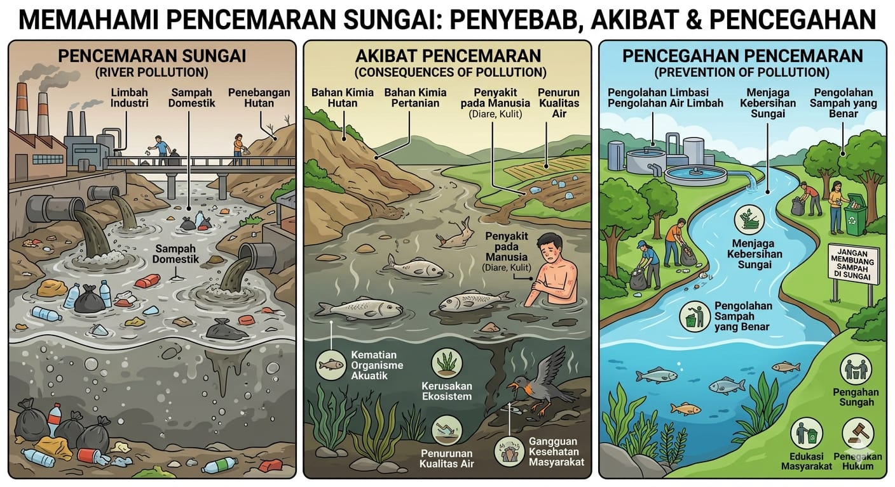

Sampah rumah tangga, limbah industri, dan aktivitas manusia.
1. Limbah Rumah Tangga
Air bekas cucian, sabun, deterjen, dan sampah dapur yang dibuang langsung ke sungai.
2. Limbah Industri
Pabrik membuang bahan kimia berbahaya ke sungai tanpa pengolahan.
3. Sampah Plastik
Botol, kantong plastik, dan sampah lainnya yang sulit terurai.
4. Pertanian
Pestisida dan pupuk kimia terbawa air hujan ke sungai.
5. Penebangan Hutan
Tanah menjadi mudah terbawa ke sungai dan menyebabkan air keruh.
Penyakit, kematian ikan, dan kerusakan ekosistem.
1. Gangguan Kesehatan
Air yang tercemar dapat menyebabkan penyakit seperti diare, gatal-gatal, dan infeksi kulit.
2. Kematian Ikan
Zat berbahaya dalam air dapat membunuh ikan dan makhluk hidup lainnya.
3. Kerusakan Ekosistem
Keseimbangan alam terganggu karena banyak organisme tidak dapat bertahan hidup.
4. Air Tidak Layak Digunakan
Air menjadi kotor, berbau, dan tidak bisa digunakan untuk kebutuhan sehari-hari.
5. Dampak Ekonomi
Nelayan dan masyarakat sekitar sungai mengalami kerugian karena hasil tangkapan menurun.
Menjaga kebersihan, tidak buang sampah ke sungai, dan edukasi masyarakat.
1. Tidak Membuang Sampah Sembarangan
Buang sampah pada tempatnya agar tidak masuk ke sungai.
2. Mengelola Limbah Rumah Tangga
Gunakan saluran pembuangan yang baik dan jangan membuang deterjen langsung ke sungai.
3. Mengurangi Penggunaan Plastik
Gunakan barang yang bisa dipakai ulang untuk mengurangi sampah plastik.
4. Edukasi Masyarakat
Memberikan pemahaman kepada warga tentang pentingnya menjaga kebersihan sungai.
5. Kerja Bakti / Gotong Royong
Membersihkan lingkungan dan sungai secara rutin bersama masyarakat.
